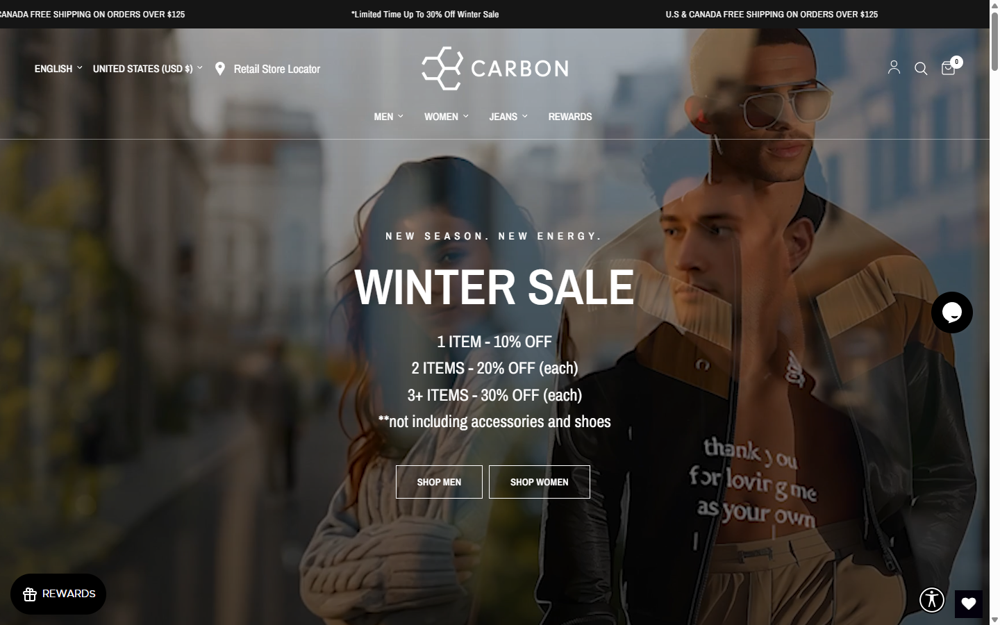
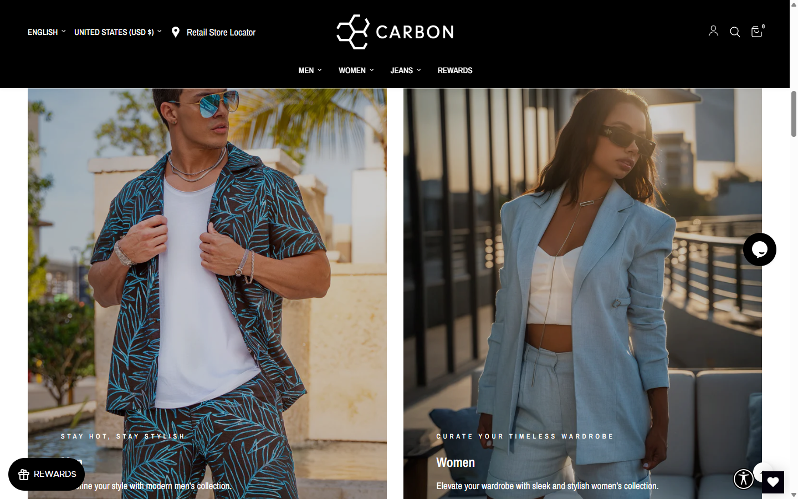
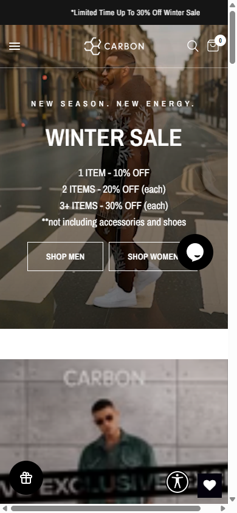
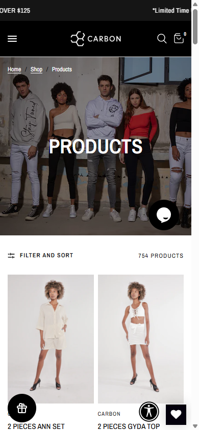
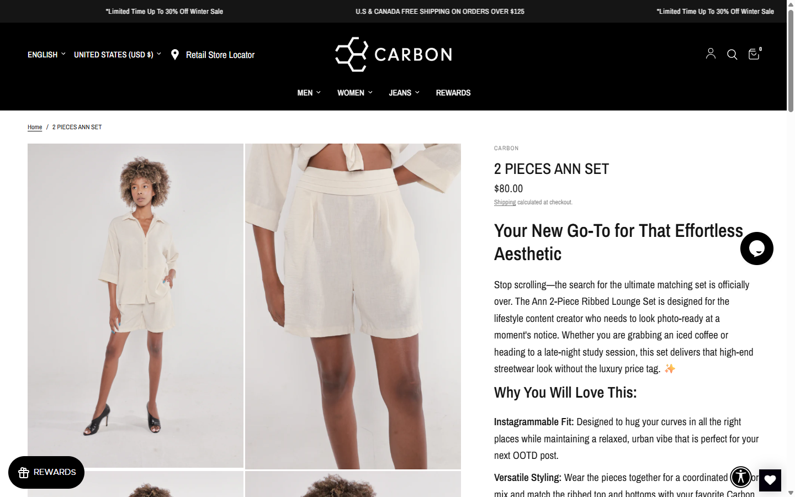

What this is: A practical health check of your public store (shopcarbon.com) in normal language. We looked at speed, mobile layout, accessibility basics, SEO signals, visuals, and clutter from extra apps — then wrote down what to fix first.
How we tested: One automated browser session (similar to Chrome) on 26 Mar 2026. Numbers change with internet speed and time of day; use this as a guide, not a lab certificate.
Screenshots in this report: Real captures from that session (saved next to this file).
1. Quick summary — do these first (ASAP)
ASAPFix horizontal scrolling on mobile. The page was slightly wider than the phone screen (about 408px content vs 375px wide). That usually means something is “sticking out” and users have to drag sideways — annoying and easy to miss in desktop testing.
ASAPName the hidden Account links. Four links to /account had no visible text and no label for screen readers. People using voice control or a screen reader cannot tell what those links do.
ASAPSocial sharing image (Open Graph) uses HTTP. Your main share image is listed as http://shopcarbon.com/.... Many platforms prefer https. Mixed content can break previews on Facebook, Slack, iMessage, etc.
ASAPProduct price shows empty “( )” next to $80. On a sample product page the price read like money plus empty brackets — looks like a small theme or app bug and hurts trust.
ASAPToo many floating buttons on mobile. Chat, rewards, wishlist, and accessibility tools overlap sale buttons and product photos. Simplify spacing or stack them so taps are not accidental.
2. Screenshots we took

Figure A — Desktop homepage. Strong hero and clear sale message. Many competing floating widgets (chat, rewards, wishlist, accessibility) sit on the edges.

Figure B — Desktop homepage (scrolled). Men / Women split looks premium. Large photos = beautiful but heavy for speed (see section 4).

Figure C — Mobile homepage. Sale text is readable. The round chat button sits close to “Shop Women” — easy to tap the wrong control.

Figure D — Mobile “All products” collection. Two-column grid works. Again several overlays (gift icon, accessibility, heart) compete for attention near product images.

Figure E — Desktop product page (sample). Good imagery and story text. Watch for the empty parentheses after price and small link text (“Shipping”) for older eyes.
Plain English: “Speed” here means how long until the page feels usable, and how much data the browser downloads. Your homepage asked for hundreds of separate files in our sample — very normal for a busy Shopify store with tracking and apps, but it adds up.
Time until main content painted (rough): about 2.3 seconds for first meaningful paint on desktop in our run.
Time until “load” event: about 5–5.5 seconds on home and mobile in our run — many images and scripts load after the first paint.
Many network requests: on the order of 600+ resource entries — scripts, images, fonts, tracking.
Why it matters: On slower phones or weak Wi‑Fi, heavy pages feel sluggish. Google also uses speed as one of many ranking hints.
What to improve (speed)
Priority
Idea
Why
Soon
Audit third-party scripts (chat, pixels, apps)
Each tag adds download and CPU. Remove what you do not actively use.
Soon
Compress hero and collection images; prefer modern formats where the theme allows
Big photos are the #1 bandwidth hog.
Later
Run Google PageSpeed Insights on home, a collection, and a product
Free report with prioritized fixes for your exact theme.
4. Mobile experience
Horizontal overflow detected: scroll width wider than screen — fix layout/CSS so nothing extends past the screen edge.
Tap targets: at least one icon link was about 40×40 pixels. Apple/Google often recommend ~44×44 minimum for comfortable tapping.
Visual clutter: rewards + wishlist + accessibility + chat float over content — consider one “help” hub or calmer positioning on small screens.
5. Accessibility (everyone can use the site)
Your storefront images we checked had alt text present in the HTML (good). Remaining issues are mostly interactive controls and structure:
Unnamed links (4): premium / account links with no text — add visible “Account” or an aria-label.
Unnamed buttons (2): Swym wishlist close buttons without a readable name — add aria-label="Close" (or similar).
Theme patterns: Mega menus use “menu” roles; automated scanners often flag these when keyboard behavior does not match strict patterns. A human accessibility review is still valuable.
Carbon Assist widget: Helps visitors adjust contrast/text; it does not replace fixing broken links/buttons in the theme.
6. SEO (Google & social)
Title and meta description: Present and sensible on the homepage.
Canonical URL: Set to https://shopcarbon.com/ (good).
Home H1: We saw “WINTER SALE” as the main heading. That is fine for a campaign, but your brand + category words live mostly in the title tag — balance campaign H1s with evergreen wording if SEO is a priority.
Structured data: Multiple JSON-LD blocks (good start). One breadcrumb snippet preview showed empty fields — worth cleaning so Google gets clean data.
Open Graph image HTTP: Switch to https for the primary og:image URL.
Broken URL check: A guessed URL /collections/mens-jeans returned 404. If old ads or emails point there, add a redirect to the real jeans collection.
7. Trust, polish, and UI details
Empty price brackets on the sample product — fix soon; shoppers notice small errors.
Social links in footer sometimes use http:// — prefer https:// everywhere.
Console errors on product (Shop Pay / browser reporting): often third-party; track if checkout complaints appear.
Many apps visible in logs (Kangaroo, Pop Convert, Swym wishlist, Tawk, multiple pixels): each adds weight and moving parts — keep only what you measure.
8. Priority cheat sheet
When
What
This week
Remove mobile horizontal scroll; label /account links; fix og:image to HTTPS; fix empty price parentheses; reduce floating-widget overlap on mobile.
Next
Image compression + script audit; 404/redirect sweep for old collection URLs; JSON-LD cleanup; enlarge tiny tap targets.
Ongoing
PageSpeed Insights passes; professional accessibility audit; A/B test hero and CTA placement.
Raw numbers: see audit-data.json in this folder. Re-run checks after major theme or app changes.